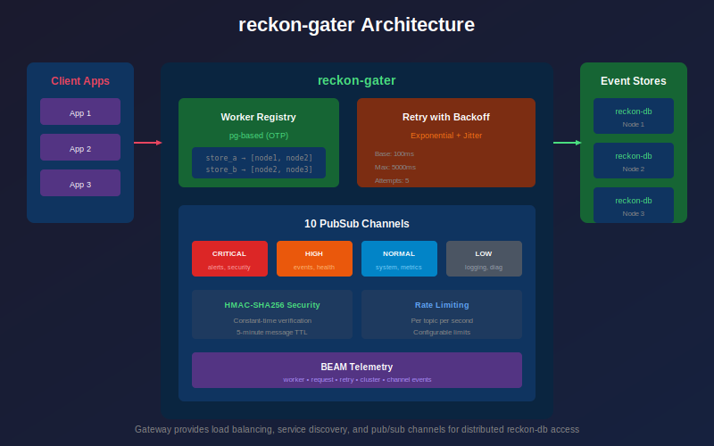
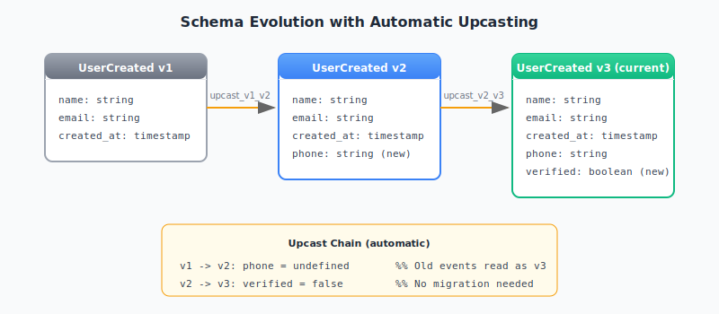
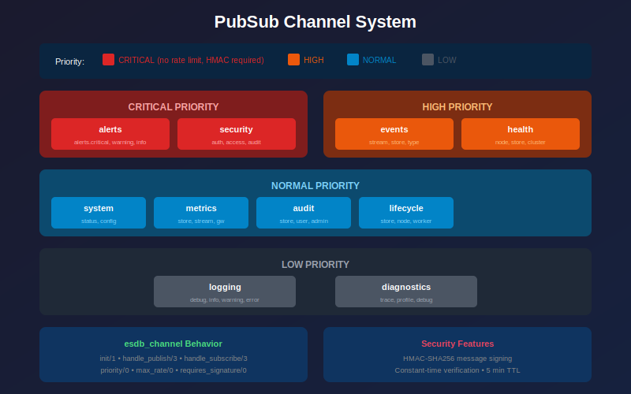
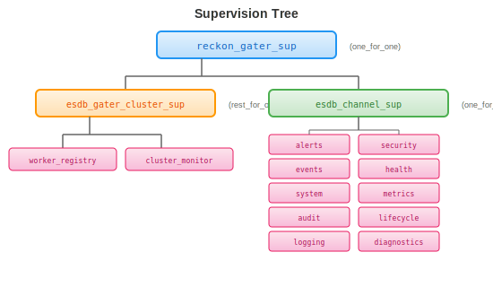
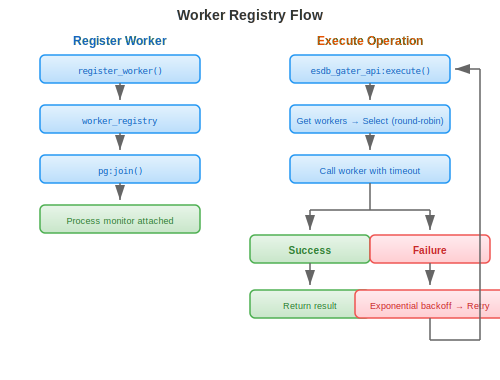
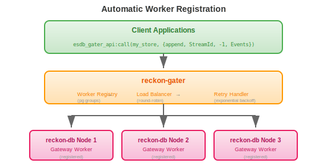

reckon-gater
View Source


Gateway for distributed access to reckon-db event stores.

Overview
reckon-gater is an Erlang gateway service providing:
- Distributed Worker Registry: pg-based registry for cluster-wide worker discovery
- Load Balancing: Round-robin with exponential backoff retry
- Shared Type Definitions: Common records for events, snapshots, and subscriptions
- Capability-Based Security: UCAN-inspired tokens for decentralized authorization
- PubSub Channels: 10 dedicated channels with priority-based delivery
- HMAC Security: Message signing for critical channels
- Telemetry: BEAM telemetry with optional OpenTelemetry exporters
Installation
Add to your rebar.config:
{deps, [
{reckon_gater, "1.0.0"}
]}.Pure Erlang implementation - works everywhere, no native dependencies.
Quick Start
%% Start the application (typically started by reckon-db)
application:ensure_all_started(reckon_gater).
%% Append events to a stream
Events = [#{type => <<"user_created">>, data => #{name => <<"Alice">>}}],
{ok, Version} = esdb_gater_api:append_events(my_store, <<"users-123">>, Events).
%% Read events from a stream
{ok, EventList} = esdb_gater_api:stream_forward(my_store, <<"users-123">>, 0, 100).
%% Subscribe to PubSub channel
ok = esdb_channel_server:subscribe(esdb_channel_events, <<"user.*">>, self()).
%% Receive channel messages
receive
{channel_message, esdb_channel_events, _Topic, Event} ->
handle_event(Event)
end.API Reference
Stream Operations
%% Append events to a stream
esdb_gater_api:append_events(StoreId, StreamId, Events) ->
{ok, NewVersion} | {error, term()}.
esdb_gater_api:append_events(StoreId, StreamId, ExpectedVersion, Events) ->
{ok, NewVersion} | {error, term()}.
%% Read events from a stream
esdb_gater_api:get_events(StoreId, StreamId, StartVersion, Count, Direction) ->
{ok, [Event]} | {error, term()}.
esdb_gater_api:stream_forward(StoreId, StreamId, StartVersion, Count) ->
{ok, [Event]} | {error, term()}.
esdb_gater_api:stream_backward(StoreId, StreamId, StartVersion, Count) ->
{ok, [Event]} | {error, term()}.
%% Stream metadata
esdb_gater_api:get_version(StoreId, StreamId) -> {ok, Version} | {error, term()}.
esdb_gater_api:stream_exists(StoreId, StreamId) -> boolean().
esdb_gater_api:get_streams(StoreId) -> {ok, [StreamId]} | {error, term()}.Subscription Operations
%% Create a subscription
esdb_gater_api:save_subscription(StoreId, Type, Selector, Name, StartFrom, Subscriber) ->
ok | {error, term()}.
%% Remove a subscription
esdb_gater_api:remove_subscription(StoreId, Type, Selector, Name) ->
ok | {error, term()}.
%% Acknowledge event processing
esdb_gater_api:ack_event(StoreId, StreamId, SubscriptionName, EventNumber) ->
ok | {error, term()}.
%% List subscriptions
esdb_gater_api:get_subscriptions(StoreId) -> {ok, [Subscription]} | {error, term()}.Snapshot Operations
%% Record a snapshot
esdb_gater_api:record_snapshot(StoreId, SourceUuid, StreamUuid, Version, Record) ->
ok | {error, term()}.
%% Read a snapshot
esdb_gater_api:read_snapshot(StoreId, SourceUuid, StreamUuid, Version) ->
{ok, Snapshot} | {error, term()}.
%% Delete a snapshot
esdb_gater_api:delete_snapshot(StoreId, SourceUuid, StreamUuid, Version) ->
ok | {error, term()}.
%% List snapshots
esdb_gater_api:list_snapshots(StoreId, SourceUuid, StreamUuid) ->
{ok, [Snapshot]} | {error, term()}.Health
esdb_gater_api:health() -> healthy | {degraded, Reason} | {unhealthy, Reason}.
esdb_gater_api:quick_health_check(StoreId) -> ok | {error, term()}.Temporal Queries
Query events by timestamp for point-in-time reconstruction. See Temporal Queries Guide.
%% Read events up to a timestamp
esdb_gater_api:read_until(StoreId, StreamId, Timestamp) ->
{ok, [Event]} | {error, term()}.
esdb_gater_api:read_until(StoreId, StreamId, Timestamp, Opts) ->
{ok, [Event]} | {error, term()}.
%% Read events in a time range
esdb_gater_api:read_range(StoreId, StreamId, FromTs, ToTs) ->
{ok, [Event]} | {error, term()}.
%% Get stream version at a specific timestamp
esdb_gater_api:version_at(StoreId, StreamId, Timestamp) ->
{ok, Version} | {error, term()}.Scavenging
Remove old events beyond retention, optionally archive first. See Scavenging Guide.
%% Scavenge a stream (delete old events)
esdb_gater_api:scavenge(StoreId, StreamId, Opts) ->
{ok, Result} | {error, term()}.
%% Scavenge streams matching a pattern
esdb_gater_api:scavenge_matching(StoreId, Pattern, Opts) ->
{ok, [Result]} | {error, term()}.
%% Preview what would be deleted (dry run)
esdb_gater_api:scavenge_dry_run(StoreId, StreamId, Opts) ->
{ok, Preview} | {error, term()}.Causation Tracking
Track event lineage for debugging and auditing. See Causation Guide.

%% Get events caused by an event
esdb_gater_api:get_effects(StoreId, EventId) ->
{ok, [Event]} | {error, term()}.
%% Get the event that caused this one
esdb_gater_api:get_cause(StoreId, EventId) ->
{ok, Event} | {error, not_found}.
%% Get full causation chain (root to this event)
esdb_gater_api:get_causation_chain(StoreId, EventId) ->
{ok, [Event]} | {error, term()}.
%% Get all events with the same correlation ID
esdb_gater_api:get_correlated(StoreId, CorrelationId) ->
{ok, [Event]} | {error, term()}.
%% Build causation graph for visualization
esdb_gater_api:build_causation_graph(StoreId, EventId) ->
{ok, Graph} | {error, term()}.Schema Operations
Schema registry with automatic upcasting. See Schema Evolution Guide.

%% Register a schema
esdb_gater_api:register_schema(StoreId, EventType, Schema) -> ok.
%% Get schema for an event type
esdb_gater_api:get_schema(StoreId, EventType) ->
{ok, Schema} | {error, not_found}.
%% List all schemas
esdb_gater_api:list_schemas(StoreId) -> {ok, [SchemaInfo]}.
%% Upcast events to current schema version
esdb_gater_api:upcast_events(StoreId, Events) ->
{ok, UpcastedEvents} | {error, term()}.
%% Unregister a schema
esdb_gater_api:unregister_schema(StoreId, EventType) -> ok.Memory Pressure
Adaptive behavior based on system memory. See Memory Pressure Guide.
%% Get current memory pressure level
esdb_gater_api:get_memory_level(StoreId) ->
{ok, normal | elevated | critical}.
%% Get detailed memory statistics
esdb_gater_api:get_memory_stats(StoreId) ->
{ok, #{used := bytes(), total := bytes(), level := atom()}}.Stream Links
Create derived streams from source streams. See Stream Links Guide.

%% Create a new link (filter + transform)
esdb_gater_api:create_link(StoreId, LinkSpec) -> ok.
%% Delete a link
esdb_gater_api:delete_link(StoreId, LinkName) -> ok.
%% Get link by name
esdb_gater_api:get_link(StoreId, LinkName) ->
{ok, LinkInfo} | {error, not_found}.
%% List all links
esdb_gater_api:list_links(StoreId) -> {ok, [LinkInfo]}.
%% Start/stop a link
esdb_gater_api:start_link(StoreId, LinkName) -> ok.
esdb_gater_api:stop_link(StoreId, LinkName) -> ok.
%% Get detailed link info
esdb_gater_api:link_info(StoreId, LinkName) ->
{ok, #{status := atom(), events_processed := integer()}}.Channels
%% Subscribe to a topic
esdb_channel_server:subscribe(ChannelName, Topic, Pid) -> ok.
%% Subscribe with capability token (for authorization)
esdb_channel_server:subscribe(ChannelName, Topic, Pid, CapabilityToken) ->
ok | {error, {unauthorized, Reason}}.
%% Unsubscribe from a topic
esdb_channel_server:unsubscribe(ChannelName, Topic, Pid) -> ok.
%% Publish a message
esdb_channel_server:publish(ChannelName, Topic, Message) ->
ok | {error, rate_limited | signature_required | invalid_signature}.
%% Publish with capability token (for authorization)
esdb_channel_server:publish(ChannelName, Topic, Message, CapabilityToken) ->
ok | {error, {unauthorized, Reason}}.Security
%% Sign a message with default secret
esdb_pubsub_security:sign(Message) -> SignedMessage.
%% Sign with custom secret
esdb_pubsub_security:sign(Message, Secret) -> SignedMessage.
%% Verify a signed message
esdb_pubsub_security:verify(SignedMessage) -> ok | {error, Reason}.
%% Set the default secret
esdb_pubsub_security:set_secret(Secret) -> ok.Retry Configuration
%% Create custom retry config
Config = esdb_gater_retry:new_config(
100, %% base_delay_ms
5000, %% max_delay_ms
5 %% max_attempts
),
%% Execute with custom retry
esdb_gater_api:execute(my_store, Fun, Config).Channels

The gateway provides 10 dedicated PubSub channels:
| Channel | Priority | Rate Limit | HMAC | Purpose |
|---|---|---|---|---|
esdb_channel_alerts | critical | unlimited | required | Critical system alerts |
esdb_channel_security | critical | unlimited | required | Security events |
esdb_channel_events | high | unlimited | optional | Business events |
esdb_channel_health | high | 100/sec | optional | Health checks |
esdb_channel_system | normal | unlimited | optional | System notifications |
esdb_channel_metrics | normal | 10000/sec | optional | Performance metrics |
esdb_channel_audit | normal | unlimited | optional | Audit trail |
esdb_channel_lifecycle | normal | unlimited | optional | Lifecycle events |
esdb_channel_logging | low | 1000/sec | optional | Log messages |
esdb_channel_diagnostics | low | 100/sec | optional | Diagnostic info |
Channel Priorities
- critical: Immediate delivery, no rate limiting, HMAC required
- high: Priority delivery, minimal rate limiting
- normal: Standard delivery
- low: Background delivery, may be rate limited
Architecture
Supervision Tree

Worker Registry Flow

Channel Message Flow

Configuration
%% sys.config
[{reckon_gater, [
%% Cluster configuration
{cluster, [
{port, 45893},
{multicast_addr, {239, 255, 0, 2}}
]},
%% Retry defaults
{retry, [
{base_delay_ms, 100},
{max_delay_ms, 30000},
{max_attempts, 10}
]},
%% Channel configuration
{channels, [
{esdb_channel_events, [
{priority, high}
]},
{esdb_channel_metrics, [
{max_rate, 10000}
]}
]},
%% Security
{security, [
{hmac_secret, <<"your_secret_here">>},
{message_ttl_seconds, 300}
]},
%% Telemetry
{telemetry_handlers, [logger]}
]}].Telemetry Events
| Event | Measurements | Metadata |
|---|---|---|
[esdb_gater, worker, registered] | system_time | store_id, node, pid |
[esdb_gater, worker, unregistered] | system_time | store_id, pid |
[esdb_gater, worker, lookup] | duration | store_id |
[esdb_gater, request, start] | system_time | store_id, request_type |
[esdb_gater, request, stop] | duration | store_id, request_type, result |
[esdb_gater, request, error] | duration | store_id, request_type, reason |
[esdb_gater, retry, attempt] | delay_ms, attempt | store_id, reason |
[esdb_gater, retry, exhausted] | total_attempts | store_id, reason |
[esdb_gater, cluster, node, up] | system_time | node, member_count |
[esdb_gater, cluster, node, down] | system_time | node, member_count |
[esdb_gater, channel, broadcast] | recipient_count | channel, topic |
Attaching Handlers
%% Attach default logger handler
ok = esdb_gater_telemetry:attach_default_handler().
%% Attach custom handler
Handler = fun(Event, Measurements, Meta, Config) ->
%% Your custom handling
ok
end,
ok = esdb_gater_telemetry:attach(my_handler, Handler, #{}).
%% Detach handler
ok = esdb_gater_telemetry:detach(my_handler).Building
rebar3 compile # Compile
rebar3 eunit # Unit tests (44 tests)
rebar3 ct # Integration tests (8 tests)
rebar3 dialyzer # Type checking
Testing
Test counts:
- Unit tests: 44 tests (retry, security, telemetry)
- Integration tests: 8 tests (channel system)
- End-to-end tests: 24 tests (with reckon-db, run from reckon-db)
rebar3 eunit # All unit tests
rebar3 ct --suite=esdb_channel_SUITE # Channel tests
Run e2e tests from reckon-db:
cd /path/to/reckon-db
rebar3 ct --suite=test/e2e/reckon_gater_e2e_SUITE
Integration with reckon-db
reckon-gater is designed to work with reckon-db to provide load-balanced, distributed access to event stores.
Automatic Worker Registration
When both packages are deployed on the same nodes:
- reckon-db gateway workers automatically register with reckon-gater
- No manual registration is required
- Worker cleanup is automatic when nodes leave or workers crash

Accessing the Event Store
Use the gateway API to access reckon-db with automatic load balancing and retry:
%% Stream operations
{ok, Version} = esdb_gater_api:append_events(my_store, StreamId, Events).
{ok, Version} = esdb_gater_api:append_events(my_store, StreamId, ExpectedVersion, Events).
{ok, Events} = esdb_gater_api:stream_forward(my_store, StreamId, 0, 100).
{ok, Events} = esdb_gater_api:stream_backward(my_store, StreamId, 100, 50).
{ok, Version} = esdb_gater_api:get_version(my_store, StreamId).
true = esdb_gater_api:stream_exists(my_store, StreamId).
%% Subscription operations
ok = esdb_gater_api:save_subscription(my_store, stream, StreamId, <<"my_sub">>, 0, self()).
ok = esdb_gater_api:remove_subscription(my_store, stream, StreamId, <<"my_sub">>).
ok = esdb_gater_api:ack_event(my_store, StreamId, <<"my_sub">>, EventNumber).
{ok, Subs} = esdb_gater_api:get_subscriptions(my_store).
%% Snapshot operations
ok = esdb_gater_api:record_snapshot(my_store, SourceUuid, StreamUuid, Version, Record).
{ok, Snap} = esdb_gater_api:read_snapshot(my_store, SourceUuid, StreamUuid, Version).
ok = esdb_gater_api:delete_snapshot(my_store, SourceUuid, StreamUuid, Version).
{ok, Snaps} = esdb_gater_api:list_snapshots(my_store, SourceUuid, StreamUuid).
%% Health check
healthy = esdb_gater_api:health().
ok = esdb_gater_api:quick_health_check(my_store).Deployment
reckon-db includes reckon-gater as a dependency. Starting reckon-db automatically starts the gateway:
%% Start reckon-db (includes gater)
application:ensure_all_started(reckon_db).
%% Gateway workers auto-register with the pg-based registry
%% Use the gater API for all operations
{ok, Version} = esdb_gater_api:append_events(my_store, StreamId, Events).In a multi-node cluster, each node runs reckon-db with its gateway worker. The pg-based registry provides:
- Cluster-wide worker discovery via
pg:get_members/2 - Eventual consistency (workers visible across all nodes)
- Automatic cleanup on node failure (pg membership)
- Load balancing with round-robin selection
- Exponential backoff retry on failures
Shared Types
reckon-gater provides shared type definitions used across the ecosystem. Include them in your modules:
-include_lib("reckon_gater/include/esdb_gater_types.hrl").Records
| Record | Purpose |
|---|---|
#event{} | Event with type, data (Erlang term), and metadata |
#snapshot{} | Aggregate snapshot at a specific version |
#subscription{} | Subscription state and configuration |
#append_result{} | Result of an append operation |
Version Constants
| Constant | Value | Purpose |
|---|---|---|
?NO_STREAM | -1 | Stream must not exist (first write) |
?ANY_VERSION | -2 | No version check, always append |
?STREAM_EXISTS | -4 | Stream must exist |
See the Shared Types Guide for detailed usage.
Related Projects

| Project | Description |
|---|---|
| reckon-db | Core event store built on Khepri/Ra |
| evoq | CQRS/Event Sourcing framework |
| reckon-evoq | Adapter connecting evoq to reckon-db |
License
Apache-2.0